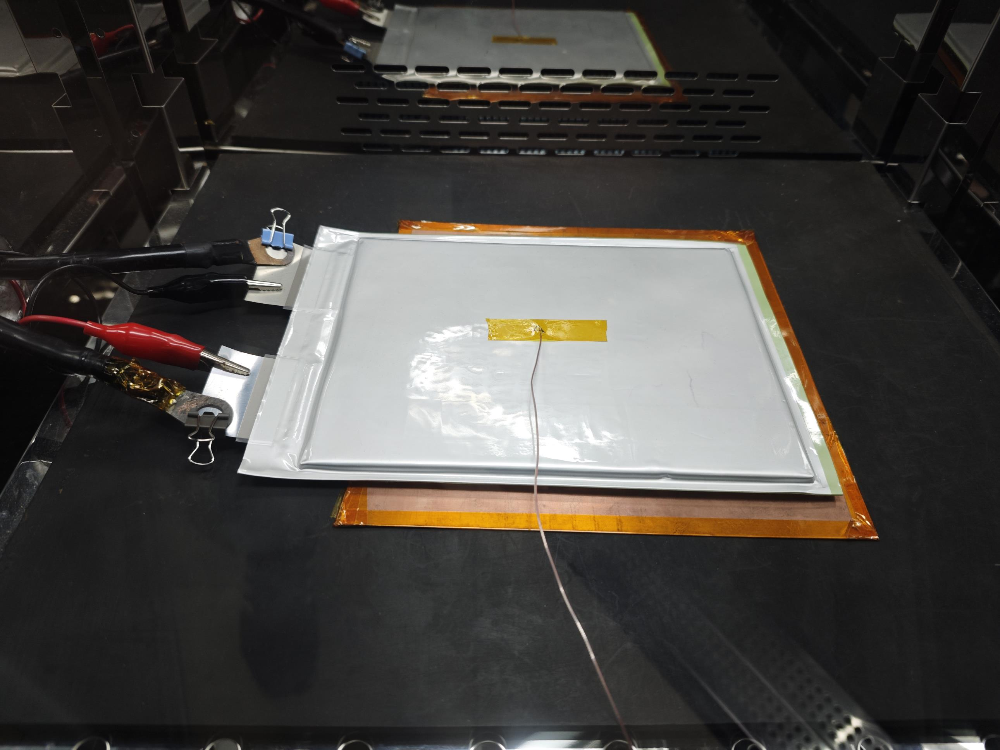
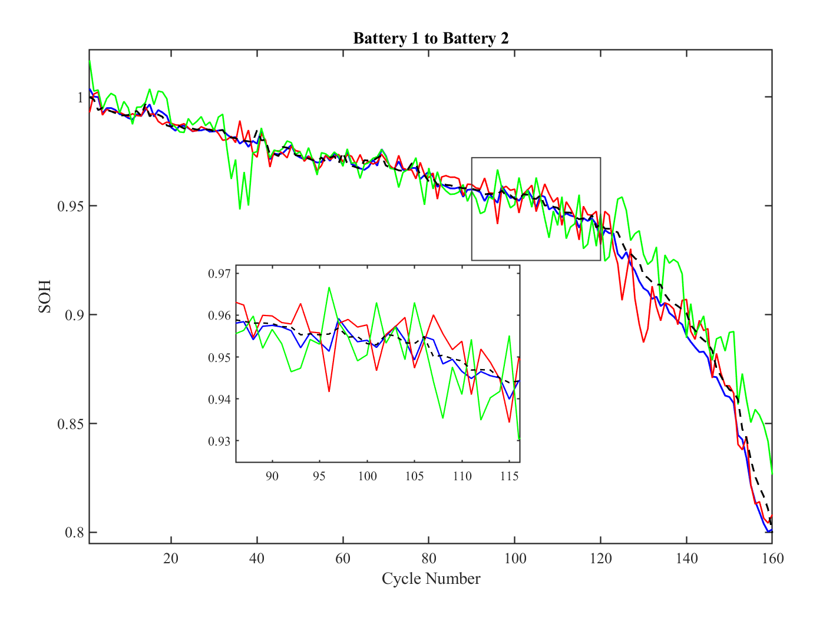

Project 01
Cross-Rate Lithium-Ion Battery SOH Prediction
A GJO-TCN-Transformer transfer-learning framework that transfers degradation knowledge from public datasets to high-rate automotive pouch cells.
My contribution: high-rate cell experiments, health-feature engineering, model development, transfer-learning validation, and first-author manuscript preparation.
Key result0.319–0.444% MAPE across four cross-battery transfer settings
View project →